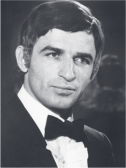

Jeta në Kosovë dikur dhe sot
Kultura - pasuri kombëtare
Grupi i katërt: Filmi, drama e piktura në Kosovë

Bekim Fehmiu ishte aktori i parë kosovar i teatrit dhe i filmit. Ai luajti në më shumë se 40 filma.
Zake Prelvukaj është piktore e njohur kosovare.
Ajo njihet për: piktura me ngjyra të forta dhe të gjalla; trajtimin e figurës së gruas shqiptare; elemente nga tradita dhe kultura kombëtare.